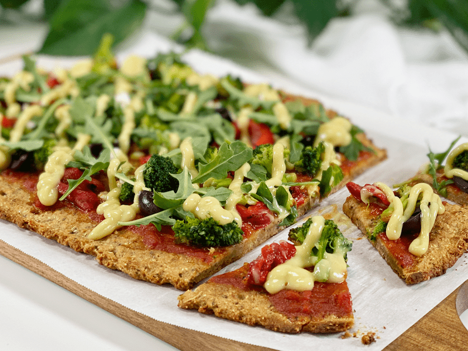
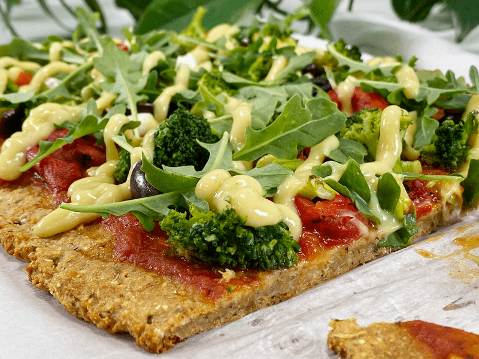
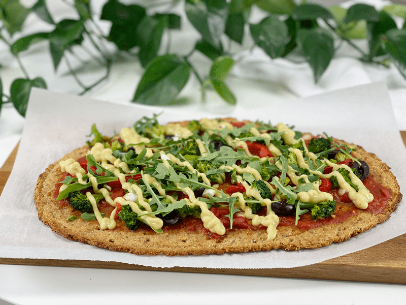
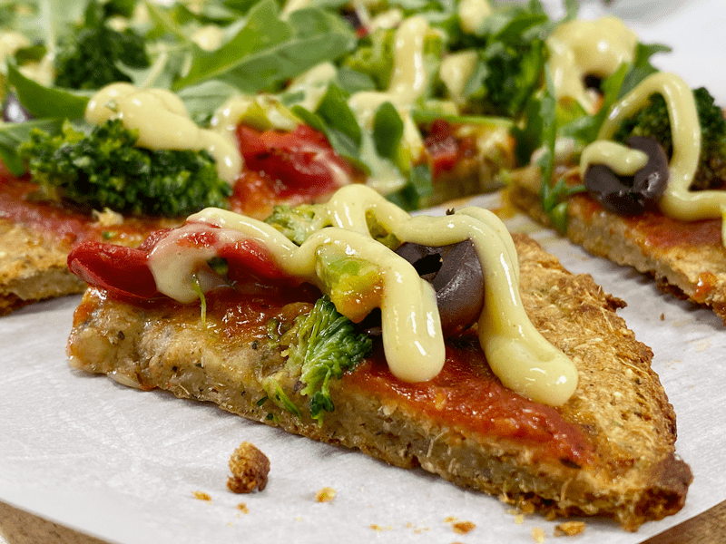
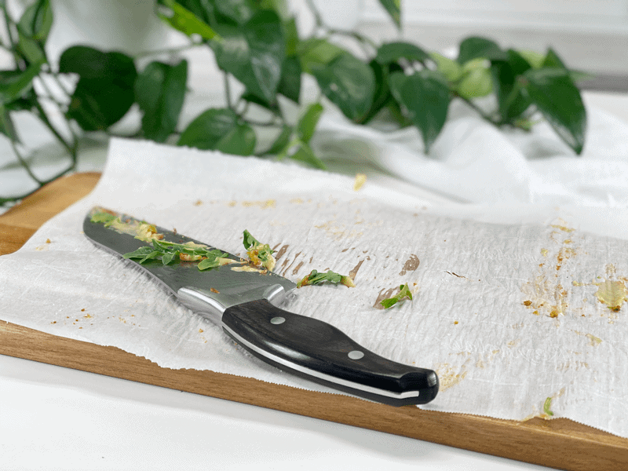
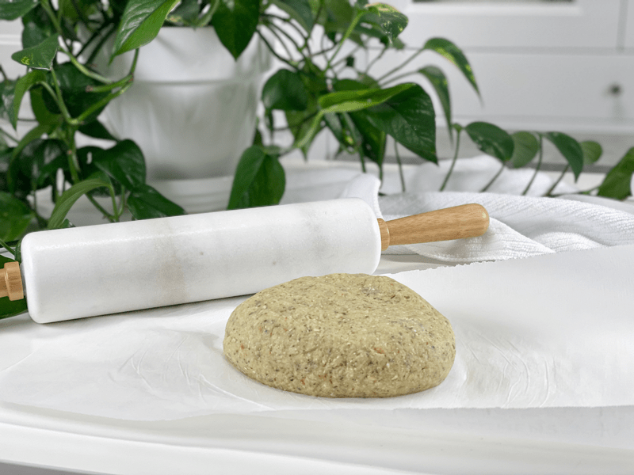
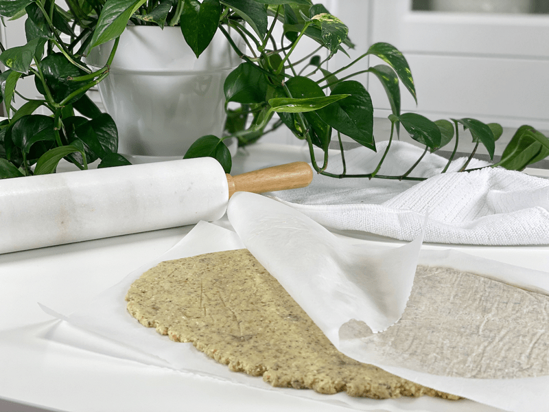
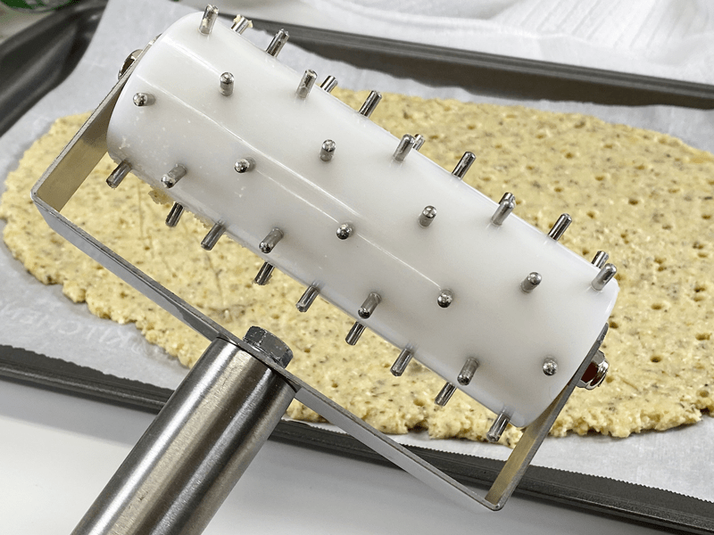
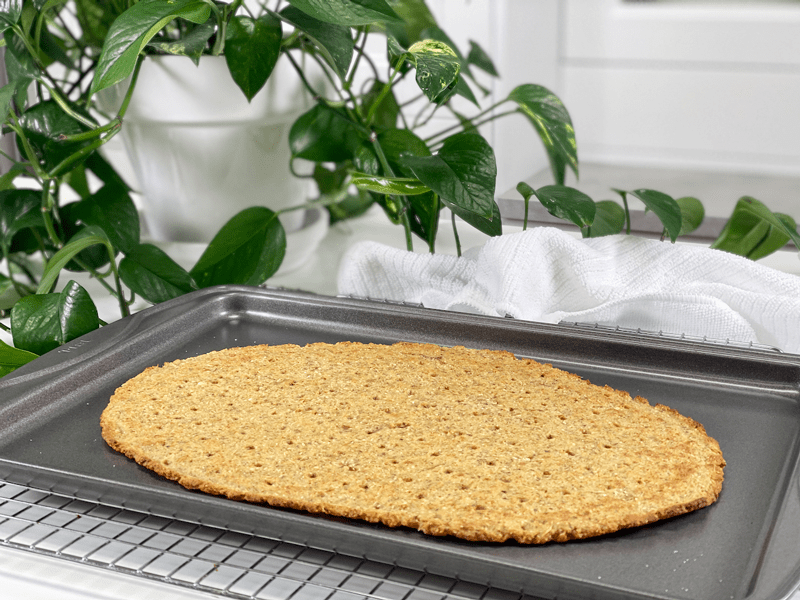
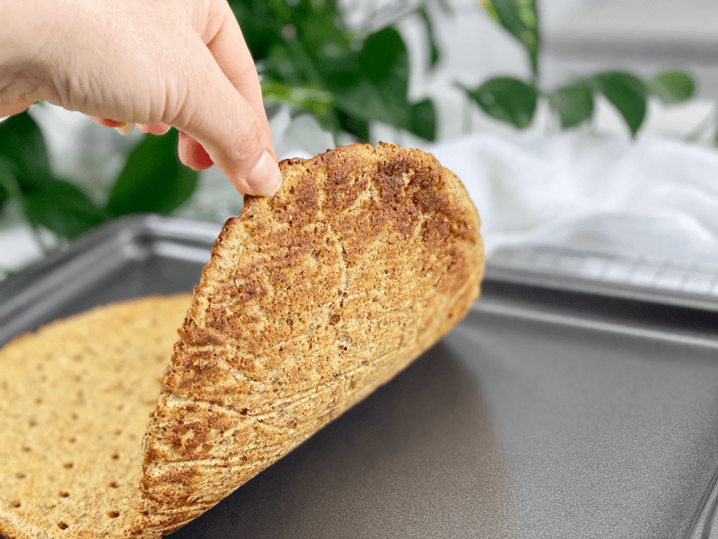

Sweet Potato Pizza Crust | Cooked | Oil-Free

Today’s recipe is gluten-free, vegan, nut-free, yeast-free, and oil-free. The main ingredient is steamed sweet potatoes accompanied by a small amount of rolled oats and just a couple of other ingredients (6 altogether, including the spices)! This crust is crispy on the outside, crunchy along the edges, and soft in the center. Everyone knows that the crust lays the foundation upon which all great pizzas are built. A pizza without a crust is like a car without wheels, or more appropriately, like a glass of water without a glass.

The joy of pizza starts with the aroma of it baking in the oven. Think about all of those times you drove home after picking up a pizza and the smell of it wafting through your car. Or that exhilaration you felt when someone brought a pizza to a party or to an event, how the smell lifted your spirits. The actual eating of it is monumental, of course, but the smell…oh, the smell of it brings more joy because it means pizza will finally soon be a reality in your life.

In order to achieve the same response with my homemade, healthified pizza, I started by adding seasonings to the crust dough. The smell of such seasonings baking in the oven is equivalent to the smell of chocolate chip cookies baking. In most cases, you don’t prebake pizza dough, especially if you are buying it premade. For this recipe, you will want to bake it first, then add the toppings, followed by another round in the oven. To get the gastric juices flowing, I added Italian seasoning to the dough, which sent off an invisible fireworks display of rich aromas that wafted through the entire house.
Once the crust is baked, it is ready for step two, which is the toppings. I will leave that up to you, because pizza toppings are very personal. For today’s pizza, I used whatever I had in the kitchen: pizza sauce, steamed broccoli, diced green onions, sliced kalamata olives, and roasted red peppers. After it was baked, I topped it with baby arugula and my favorite vegan cheese sauce. Heaven.
Our Pizza Experience Today
“Hey Bob, I just made a pizza–do you want some?” Bob slowly answered, “Nah, I am good. I just ate some broccoli and a handful of nuts, so I am not hungry.” I stepped out into the studio kitchen and pulled the pizza from the oven. It smelled amazing. Keeping it hot and fresh to enjoy for lunch, I didn’t dilly-dally with a full-blown photo shoot. I quickly snapped a few photos and brought it into the house.

Bob was working at the little table we have in the sunroom. I set the pizza down between us and hopped up on the chair (it’s a bar height table and chairs). I took a bite. “Mmmm.” Another bite. “Oh, man!” And another bite. “Whew, this is amazing. Are you sure you don’t want to at least try it?”

I think the aroma got the best of him because he buckled and agreed to try a bite. “Oh, wow. Really?!” One bite turned into two, three, five—then one piece, two piece, three piece, four. Before you knew it, we demolished the WHOLE thing.

“I thought you weren’t hungry,” I snickered. “I’m not!” he replied. Well, I guess not, after eating all that pizza. You know, there are few things that bring me more pleasure than feeding my Bob healthy, nutritious, and delicious foods… well, other than sharing the recipes with you all.
Pizza Perks (say that 10x fast)
- Be creative with the shape and size of your pizza crust — round, oblong, rectangle, one large one, or two small ones.
- Another dandy idea for this pizza crust is to make it, bake it, and enjoy it as a flatbread.
Ingredient Run-Down
Sweet Potato Variety
- When it comes to the type of sweet potato used, I choose the white variety, since they aren’t as sweet as the orange variety. Having a little sweetness in the pizza crust is nice because it balances the acidity in the pizza sauce, but orange sweet potatoes are just too overpowering to me. The white ones also lend to a more natural pizza dough color.
- If you use any other type of sweet potato, be prepared for a slightly different color and taste.
- Make sure that the sweet potatoes cook evenly all the way through. For this recipe, the flesh of the sweet potato needs to be moist and very soft. I cooked mine in the Instant Pot, which I have to admit was really nice because the Instant Pot doesn’t warm up the kitchen as the oven does.
Gluten-Free Rolled Oats
- I first tested this recipe using cassava flour, but it turned out too dense. I found that the rolled oats created more of a bread-like texture.
- Oats are an abundant source of complex carbohydrates and water-soluble fiber (produces a feeling of satiety), as well as group B vitamins, omega 6 fatty acids, and some minerals and trace elements such as zinc, copper, and manganese.
- When purchasing rolled oats, make sure that the package reads “gluten-free” to ensure that they haven’t been cross-contaminated with other gluten-containing grains.
Arrowroot
- I added a touch of arrowroot starch because it helps make a firm and crispy-on-the-edges crust that’s also tender in the center.
- I learned all about arrowroot when Bob was placed on the AIP diet (Autoimmune Protocol). I discovered ways to cook with it instead of a lot of different flours. It is derived from plant tubers and doesn’t have any taste to it.
Psyllium Husks
- Psyllium husks give the dough a gluten-like structure and have an undetectable flavor.
- Due to its high fiber content, psyllium is often sold as a laxative, which can be good to know if you have a sensitive digestive system. In ratio to other ingredients, you don’t need to worry about this pizza crust having a laxative effect. Think of it as a therapeutic boost for the plumbing pipes. You can read more about it (here).
- Psyllium husks are inexpensive and can be readily found in grocery stores, usually in the pharmaceutical area.
Last-Minute Insight
I have made this recipe many times over (highly requested by my loving husband). I have made large full-sized pizza crusts, small circles, and oblong shapes. I LOVE a crunchy crust, so the smaller you make the crusts, the more crispy crust you get. Along with this creativity comes a shift in cooking times. The smaller they are, the quicker they cook. So, please keep that in mind and stand close to the oven, checking the crust every so often. Document your cook times for the next round of pizza crust.
I hope you enjoy this recipe. Please keep in touch by leaving a comment below. Be blessed, amie sue
Ingredients
- 2 cups baked and mashed sweet potatoes
- 1/2 cup rolled oats, powdered
- 2 Tbsp arrowroot
- 1 Tbsp psyllium husks or ground flaxseeds
- 1 Tbsp Italian seasoning
- 1/2 tsp sea salt
Cook the Sweet Potatoes
Instant Pot Method
- Scrub the sweet potatoes, removing any damaged parts with a paring knife.
- Place the steamer basket in Instant Pot and add 1 cup of water. Insert the whole sweet potatoes (skin on) in the basket.
- Secure the lid, flip the pressure valve to “Sealing,” select “Manual,” and on high pressure, adjust the time for 15 minutes.
- Allow pressure to release naturally, then remove the sweet potatoes, letting them cool before using.
- When cool enough to handle, peel the skins off.
- Mash 2 cups’ worth.
Oven Method
- Scrub the sweet potatoes, removing any damaged parts with a paring knife.
- Pierce each sweet potato a couple of times and place on a parchment-lined baking sheet.
- You don’t have to use parchment paper, but I prefer to do so. As sweet potatoes bake, they release sugary liquid, which can make a real sticky mess on the pan.
- Bake whole sweet potatoes at 425 degrees (F) for about an hour, until very soft.
- When done cooking, let them cool, then peel the skins off.
- Mash 2 cups’ worth.
Making the Pizza Dough & Baking
- Preheat the oven to 425 degrees (F) and line two baking sheets with parchment paper.
-
In a medium-large mixing bowl, combine the mashed sweet potato, flour, arrowroot, psyllium husks or ground flaxseeds, seasoning, and salt. Mix well until well combined.
-
Place the dough on a piece of parchment paper, adding another piece over the dough ball. Press it down and roll it into a circle (or any shape) with your hands, then run a rolling pin over the top to smooth it out. Peel off the top layer of parchment paper and pierce the dough with a fork and slide on to a pan.
-
Standard Baking Pan: Bake on the parchment paper for about 20 minutes, depending on how thin or thick your crusts are, so adjust cooking time as needed. Flip over, remove the paper, and cook for another 10 minutes.
- If you are using toppings that are either pre-cooked or don’t require much cooking time, I suggest baking the crust for an additional 10 minutes (removing the parchment paper) before adding the topping. This all comes down to preference.
- Cast Iron Pan: Preheat the cast iron pan in the oven before adding the crust. Bake on the parchment paper for 15 minutes, flip and remove the paper, and bake for another 10 minutes. Flip one more time and cook for 2 minutes.
- ***Please read my “Last-Minute Insight” up above regarding cook times.
-
Remove from the oven, top with sauce, vegan cheese, vegetables, or anything else you like and pop back in the oven for 15 more minutes.
-
Remove from the oven and serve hot. Enjoy!
-

-
Knead the dough and place it on a piece of parchment paper.
-

-
Place another sheet on top and roll it out to the desired size.
-

-
Prick the dough with a fork or a fancy-dancy pizza roller hole maker thingamabob.
-

-
Roughly halfway through the baking time, remove the parchment paper so it can crisp up on the bottom.
-

-
Just the way I like it!
© AmieSue.com